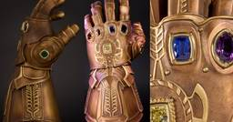
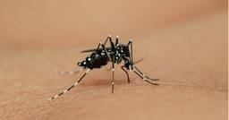
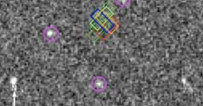
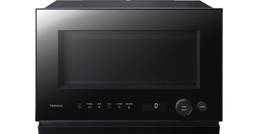
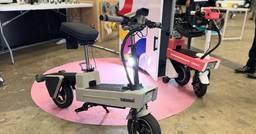

ギズモード・ジャパン
https://www.gizmodo.jp
日本最大のテクノロジー＆ガジェット専門メディア。YouTubeや記事を通じて、最新ガジェットの偏愛レビューから、AI／サイエンスの深掘りコンテンツまで幅広く発信しています。「みんなで探求する」を合言葉に、刺激的な未来の体験をシェアします。
フィード
「山がいらない揚水発電」が実現？カギは水の2.5倍の密度を持つ謎の流体
ギズモード・ジャパン
山のいらない揚水発電を実現する、水の2.5倍の密度を持つ新流体技術を解説します。世界最大の蓄電システムを変える可能性に迫ります。
5時間前
スーパーエルニーニョでカリフォルニアの海がバグり始める。熱帯の外来種が続々出現中
ギズモード・ジャパン
スーパーエルニーニョと海洋熱波によりカリフォルニアの海水温が上昇し、熱帯の外来種が続々と出現しています。在来種の生態系への影響や海洋異変の現状を解説します。
6時間前
こいつの魅力はペンだ！ RTX Spark搭載クリエイター向け「Lenovo Yoga 9n 2-in-1」が最高性能じゃなくてもいい理由
ギズモード・ジャパン
RTX Spark搭載のLenovo Yoga 9n 2-in-1の魅力と性能を徹底レビュー。ペンやディスプレイの優れた機能と価格の妥当性を解説します。
6時間前

39億円で購入されたレプリカ。天然宝石がハメ込まれたインフィニティ・ガントレットが競売へ
ギズモード・ジャパン
天然宝石がハメ込まれたインフィニティ・ガントレットのレプリカが競売へ。映画さながらの豪華なお宝の detalhesを紹介します。
7時間前
マイナス150度で冷凍保存されたブタの腎臓、無事にブタへ移植成功
ギズモード・ジャパン
マイナス150度で冷凍保存したブタの腎臓を移植することに成功した最新の研究について解説します。臓器不足の解決に向けた新技術の現状と今後の課題がわかります。
7時間前
今年のバズりワード｢maxxing｣ってどういう意味？ AI関連が多すぎて流行語
ギズモード・ジャパン
ネットスラングmaxxingが2026年の言葉に選出された背景やAI時代のトレンドを解説します
8時間前
孤立した君に、宇宙からサバイバルキットをお届け。米空軍研究所がロケットを使った輸送をテスト
ギズモード・ジャパン
米空軍研究所がテストするロケットを活用した宇宙デリバリーの仕組みや、災害時や孤立地域への救命・サバイバルキット輸送という新たな可能性について解説します。
8時間前
3輪走行できるBYDの車、“雑技団走り”で駐禁から逃げ出す
ギズモード・ジャパン
BYDの車に搭載された油圧サスペンションによる3輪走行機能の仕組みと、駐車違反から逃れるためにその機能が使われたユニークな実際の目撃事例を紹介します。
8時間前
さすがFMV。この作りでJIS配列キーボードありがとう
ギズモード・ジャパン
ロープロファイルで磁気スイッチですよ。最新トレンドを押さえつつの、ですよ。日本人たるもの、日本語のJIS配列に慣れ親しみがち。だから海外メーカーのかっこいいキーボードを見ても「US配列ですか...」と、肩を落としがちなのですが、さすが日本生…
8時間前
猫の毛を集めるために。24時間働いて、働いて、働いてくれる家電が登場
ギズモード・ジャパン
猫の抜け毛にお悩みの方へ。ジェックスの据え置き型集毛機ファースイーパーは、24時間床の毛を集め続け、お手入れも簡単な新しい家電です。
9時間前

「蚊の恋愛」を邪魔して、繁殖を防いでやる。100年解けなかった“蚊の恋のヒミツ”を名古屋大が解明
ギズモード・ジャパン
名古屋大学が蚊の恋愛の謎を解明。羽音を聞き分ける仕組みの発見により、将来的な蚊の繁殖制御や感染症対策への応用が期待される研究内容を分かりやすく解説します。
9時間前

ウェッブ宇宙望遠鏡、何もなかったはずの宇宙空間に謎の光を発見 1
1
ギズモード・ジャパン
光は見えるのに、その正体がわからない。遠い宇宙を調査していた天文学者チームが、思いがけないものを発見しました。ビッグバン直後に生まれた古代の天体を求めて遠い宇宙を探索していたところ、正体不明の天体から謎の光（輝線）が検出されたのです。舞台と…
10時間前
クルマには、まだ夢がある。大人の冒険心をくすぐるマシンたち
ギズモード・ジャパン
大人の冒険心をくすぐるクルマを特集。実用性と遊び心を両立したトラックや空飛ぶロードスターなど、ワクワクする魅力的なマシンをご紹介します。
10時間前
お湯を沸かすついでにビットコイン採掘できる給湯器、爆誕 1
ギズモード・ジャパン
お湯を沸かしながらビットコインを採掘できる画期的な給湯器「Bitwater」が登場。給湯の熱を活用する仕組みや収益の仕組み、気になる実用性を詳しく解説します。
11時間前

頭まるごと透明な魚「デメニギス」。初の4K動画が撮影される 4
ギズモード・ジャパン
頭が透明で目が上を向く珍しい深海魚デメニギスの4K撮影に初めて成功しました。緑色の目の仕組みや実際の姿を捉えた貴重な映像と生態について詳しく解説します。
11時間前

電子レンジにも半導体の波。「外は熱い、中は冷たい」は減らせる？
ギズモード・ジャパン
冷凍ごはんを電子レンジで温めたら、端は熱々なのに真ん中はまだ冷たい。もう30秒追加すると、今度は端が熱すぎる…。電子レンジって、ときどき加減が難しいですよね。そんな温めムラを減らそうと、東芝が半導体を使った新しい電子レンジを発表しました。2…
11時間前

お家で充電、手をかざすとニッコリ。ペットのようなモビリティは「人との距離」も縮めてくれる
ギズモード・ジャパン
やだやだ！この子がいい！ この子をお迎えしたい！僕がちびっ子なら床に寝そべって駄々こねていたと思います。そのくらい吸引力を感じたのが、先日の幕張メッセで開催していた「Japan Mobility Show Bizweek 2026」で展示さ…
12時間前
クローゼットの「なんか臭う」がマシになった。2年間繰り返し使える消臭剤 1
ギズモード・ジャパン
クローゼットを開けるたび、なんだか臭い……。クローゼット内に湿気が溜まっている感じがするので、除湿・防臭ができるアイテムを投入してみました。使い始めて約2カ月。クローゼットを開けたときの臭いやジメッとした感じは、だいぶマシになりました。“い…
12時間前
アルミなキーボードをお求めならLofreeの「Hyzen」も要チェック
ギズモード・ジャパン
総重量3kg超えの圧倒的なアルミ製ボディと先進的なデュアル打鍵感を備えたLofreeのゲーミングキーボード「Hyzen」の魅力を紹介します
12時間前
梱包材が猫の爪とぎになり、熱は音波になる…摩訶不思議なグッドデザインの世界、覗いてみない？
ギズモード・ジャパン
東京ミッドタウンで開催されたグッドデザイン賞受賞展のレポート。日常の課題をユニークに解決する最新の優れたデザインの数々を紹介します。
12時間前